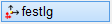
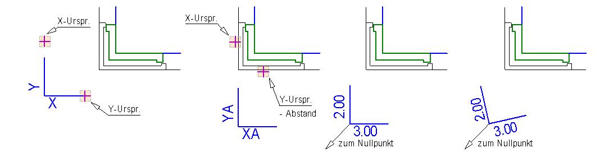

")
")
Alternativer Aufruf: mittlere Maustaste auf eine Linie oder eine Beschriftung.
Mit dieser Funktion können Sie einen neuen Ursprungspunkt eines Koordinatensystems festlegen. Das Koordinatensystem kann an einem Hilfspunkt, einer Linie, einem Kreispunkt oder frei platziert werden.
Um das Koordinatensystem zu platzieren
§Wählen Sie, ob ohne Eingabe von Differenzen oder mit einer Differenzeingabe die Lage des Ursprungs bestimmt werden soll. [X-Ursp.]; [Y-Ursp.].
|
Ohne Differenzeingabe (freier Ursprung). §Klicken Sie nacheinander jeweils einen Punkt für die Lage der X-Achse und der Y-Achse an. |
|
Mit Differenzeingabe (bezogener Ursprung). §Klicken Sie ein Bezugselement an, zu dem eine Differenz eingegeben werden soll. §Geben Sie nach der Elementkennung den Abstand mit dem entsprechenden Vorzeichen ein und bestätigen Sie mit der Eingabetaste. |


§Geben Sie den Winkel ein.
|
Schnellauswahl. Drehung des Elements um die Systemlage (Systemwinkel beachten).
|
|
Ausrichtung der Element-Grundlinie: P...: Parallel zu einem Bezugselement. O...: Orthogonal zu einem Bezugselement. §Klicken Sie entweder P... oder O... und anschließend ein beliebiges Zeichenelement an. |
Siehe auch: Ausrichtungsoptionen |
|


§Klicken Sie für den X-Wert eine beliebige Stelle auf der Zeichenfläche, einen Hilfspunkt, eine Linie oder einen Kreispunkt an.
Wenn Sie die Werte für X und Y per Tastatur eingeben, wird der Ursprung auf die 0/0 Koordinate der Zeichenfläche (links unten) bezogen (relativer Ursprung).
§Klicken Sie für den Y-Wert eine weitere Stelle auf der Zeichenfläche an.
Am gewählten Ursprungspunkt werden die X- und Y-Achsen mit den Bezeichnungen gezeichnet, die in der Darstellungskonfiguration [DefKor] festgelegt wurden.
Beispiel:
 |
|||
Freier Ursprung |
Bezogener Ursprung |
Relativer Ursprung |
Gedrehter, relativer Ursprung |
Zugehörige Referenzen: